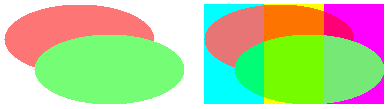
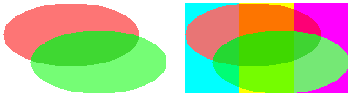

There might be times when you want to create an off-screen bitmap that has the following characteristics:
To create such a bitmap, construct a blank Bitmap object, and then construct a Graphics object based on that bitmap. Set the compositing mode of the Graphics object to CompositingModeSourceCopy.
The following example creates a Graphics object based on a Bitmap object. The code uses the Graphics object along with two semitransparent brushes (alpha = 160) to paint on the bitmap. The code fills a red ellipse and a green ellipse using the semitransparent brushes. The green ellipse overlaps the red ellipse, but the green is not blended with the red because the compositing mode of the Graphics object is set to CompositingModeSourceCopy.
Next the code prepares to draw on the screen by calling BeginPaint and creating a Graphics object based on a device context. The code draws the bitmap on the screen twice: once on a white background and once on a multicolored background. The pixels in the bitmap that are part of the two ellipses have an alpha component of 160, so the ellipses are blended with the background colors on the screen.
// Create a blank bitmap.
Bitmap bitmap(180, 100);
// Create a Graphics object that can be used to draw on the bitmap.
Graphics bitmapGraphics(&bitmap);
// Create a red brush and a green brush, each with an alpha value of 160.
SolidBrush redBrush(Color(210, 255, 0, 0));
SolidBrush greenBrush(Color(210, 0, 255, 0));
// Set the compositing mode so that when overlapping ellipses are drawn,
// the colors of the ellipses are not blended.
bitmapGraphics.SetCompositingMode(CompositingModeSourceCopy);
// Fill an ellipse using a red brush that has an alpha value of 160.
bitmapGraphics.FillEllipse(&redBrush, 0, 0, 150, 70);
// Fill a second ellipse using green brush that has an alpha value of 160.
// The green ellipse overlaps the red ellipse, but the green is not
// blended with the red.
bitmapGraphics.FillEllipse(&greenBrush, 30, 30, 150, 70);
// Prepare to draw on the screen.
hdc = BeginPaint(hWnd, &ps);
Graphics* pGraphics = new Graphics(hdc);
pGraphics->SetCompositingQuality(CompositingQualityGammaCorrected);
// Draw a multicolored background.
SolidBrush brush(Color((ARGB)Color::Aqua));
pGraphics->FillRectangle(&brush, 200, 0, 60, 100);
brush.SetColor(Color((ARGB)Color::Yellow));
pGraphics->FillRectangle(&brush, 260, 0, 60, 100);
brush.SetColor(Color((ARGB)Color::Fuchsia));
pGraphics->FillRectangle(&brush, 320, 0, 60, 100);
// Display the bitmap on a white background.
pGraphics->DrawImage(&bitmap, 0, 0);
// Display the bitmap on a multicolored background.
pGraphics->DrawImage(&bitmap, 200, 0);
delete pGraphics;
EndPaint(hWnd, &ps);
The following illustration shows the output of the preceding code. Note that the ellipses are blended with the background, but they are not blended with each other.

The preceding code example has the following statement:
bitmapGraphics.SetCompositingMode(CompositingModeSourceCopy);
If you want the ellipses to be blended with each other as well as with the background, change that statement to the following:
bitmapGraphics.SetCompositingMode(CompositingModeSourceOver);
The following illustration shows the output of the revised code.

Â
Â